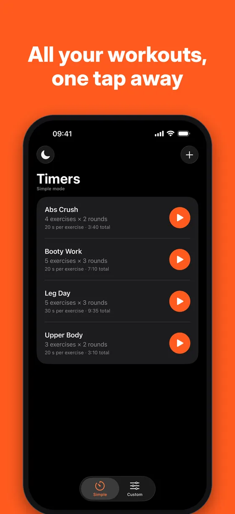
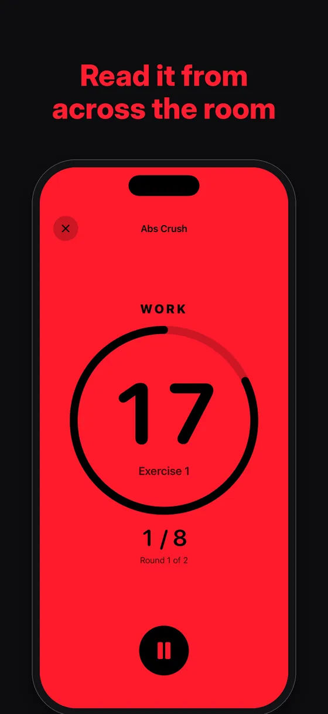
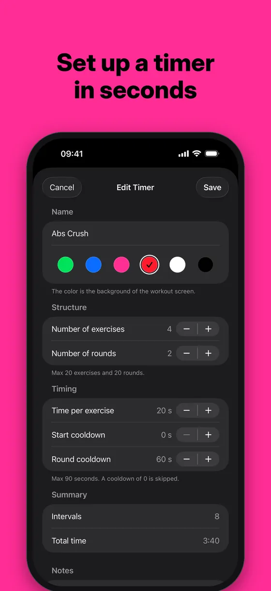
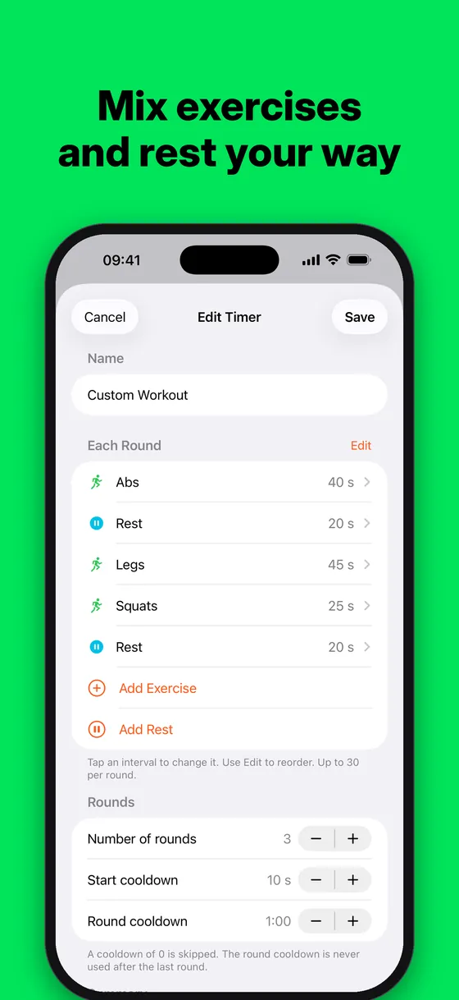
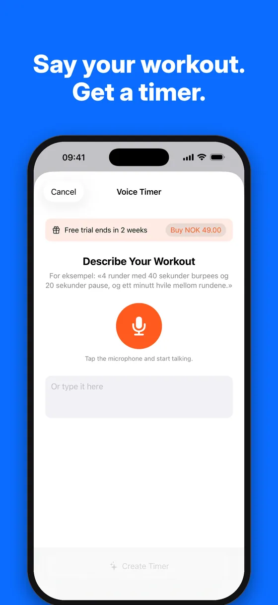
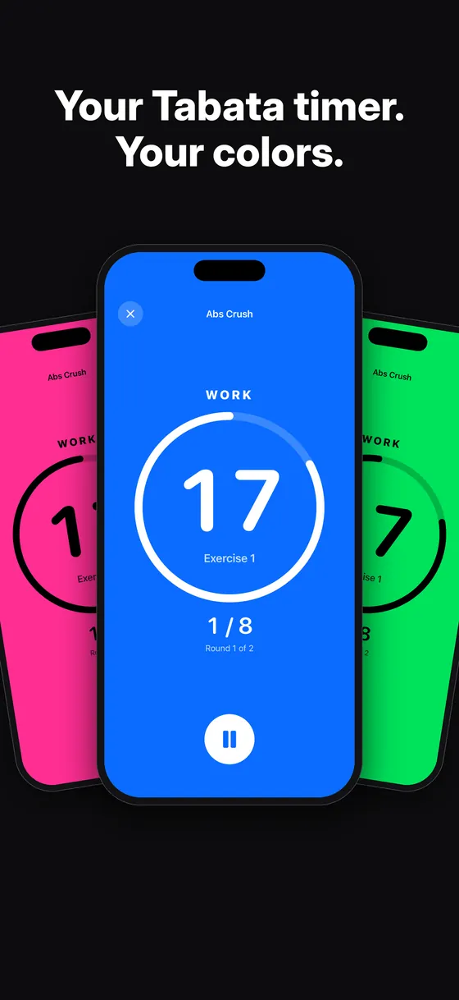
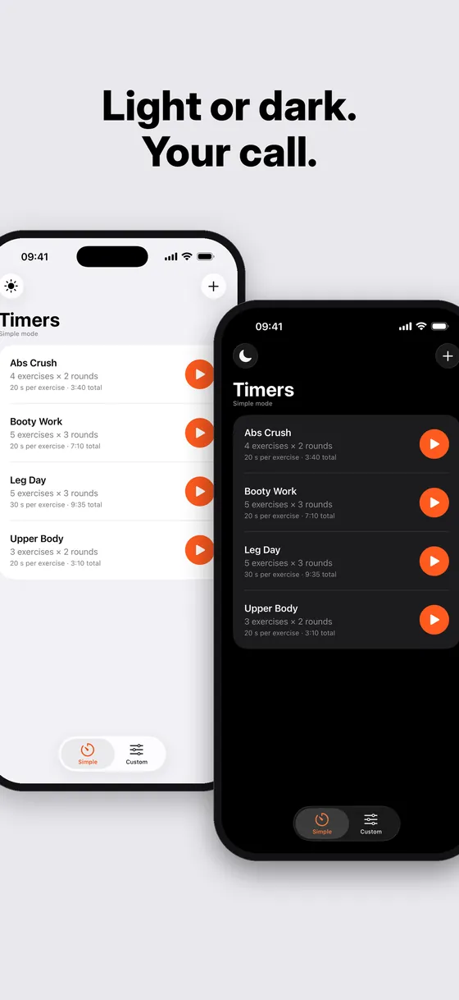

Support
Help is one tap away.
Quick answers for Simple, Custom and Voice Timer – and a real person on the other end when you need one.
What can we help with?
Jump straight to a topic.
Take a quick tour
Swipe through the app. Everything below is answered in the FAQ.







Frequently asked questions
Tap a question to see the answer.
Getting started
How do I create my first timer?
- Open Simple and tap + in the top-right corner.
- Give the timer a name, pick a color and set exercises, rounds and time.
- Tap Save, then tap the orange Play button to start.
You can create as many timers as you like.
What's the difference between Simple and Custom?
Simple is quick and structured: a number of exercises, all the same length, repeated for a number of rounds.
Custom gives you more variety: build a list of named exercises and rests, each with its own length, and repeat it for as many rounds as you need.
How do I set up a classic Tabata (20 s on, 10 s off, 8 rounds)?
Use Custom: add one exercise of 20 seconds and one rest of 10 seconds, then set the number of rounds to 8. The rest at the very end of the workout is skipped automatically.
With Voice Timer you can simply say "8 rounds of 20 seconds work and 10 seconds rest".
Which iPhones are supported?
Asla Intervals runs on iPhone with iOS 17 or later. Voice Timer needs iOS 26 and an iPhone with Apple Intelligence turned on.
Simple mode
What can I set on a Simple timer?
- Number of exercises: 1–20
- Number of rounds: 1–20
- Time per exercise: 5–90 seconds
- Start cooldown: 0–90 seconds, before the first exercise
- Round cooldown: 0–90 seconds, between rounds
A cooldown set to 0 is skipped, and the round cooldown is never used after the last round.
What does "2 / 8" on the workout screen mean?
The first number is the interval you're on. The second is the total number of intervals – exercises × rounds. With 4 exercises and 2 rounds you'll see 1 / 8 through 8 / 8. Below it you'll see which round you're in.
Why does the background change color?
Each timer has its own workout color: Green, Blue, Pink, Red, White or Black. The color is at full strength while you work and dimmed during get ready and rest, so you can tell the phase from across the room. Text and the ring switch between black and white for the best contrast.
How do I edit or delete a timer?
Tap a timer to edit it. Or swipe left on it to choose Edit or Delete.
Custom mode
How do Custom timers work?
A Custom timer is a list of exercises and rests that make up one round. Each one has its own name and length (5 seconds to 10 minutes), with up to 30 per round. Repeat the round 1–20 times, with an optional start cooldown and round cooldown of up to 300 seconds.
Tap an interval to change it, and use Edit to reorder.
Do I have to pay for Custom mode?
No. Building Custom timers by hand is free. Only Voice Timer, which creates timers from what you say, is a purchase.
Voice Timer
How does Voice Timer work?
In Custom mode, tap the microphone and describe your workout, for example "4 rounds of 40 seconds burpees and 20 seconds rest". You can also type it. Apple Intelligence turns it into a timer that opens in the editor, so you can check it before saving.
I can't find the microphone button.
Voice Timer needs iOS 26 and an iPhone with Apple Intelligence turned on. On other iPhones the button is hidden – everything else in the app still works.
To check, open Settings → Apple Intelligence & Siri on your iPhone.
Which languages can I speak?
Norwegian and English. If your iPhone is set to another language, Voice Timer listens in English.
Voice Timer didn't understand me.
- Say the number of rounds and the length of each part, like "3 rounds of 30 seconds squats, 15 seconds rest".
- Speak in a quiet place, or type the workout instead.
- Check that Asla Intervals has access to the Microphone and Speech Recognition in Settings → Apps → Asla Intervals.
You can always adjust the result in the editor before saving.
Purchases
How does the free trial work?
Voice Timer comes with a free 14-day trial. After that it's a one-time purchase – no subscription. The rest of the app is free.
How do I restore my purchase on a new iPhone?
Sign in with the same Apple Account you bought with, open Voice Timer and tap Restore Purchases.
How do I get a refund?
Purchases are handled by Apple, so refunds are too. Request one at reportaproblem.apple.com.
Sound & screen
When does the app beep?
Three beeps play on the last three seconds of every interval, and a longer tone plays when the workout is done.
I can't hear the beeps.
Beeps play even with the silent switch on and mix with your music. If you can't hear them:
- Turn up the volume with the side buttons while a workout is running.
- Check that your headphones or speaker are connected to the iPhone.
- Turn off Focus modes that silence media, then try again.
Will the screen turn off during a workout?
No. The screen stays awake while a workout is running, and goes back to normal when you stop.
How do I switch between Light and Dark?
Tap the sun or moon button in the top-left corner. Touch and hold it to choose Use System Setting again. The workout screen always uses the timer's own color.
Still stuck? Let's talk.
Send us an email with your question, a bug or an idea for the app. We read every message.
- Your iPhone model and iOS version
- What you did and what happened
- A screenshot, if you have one